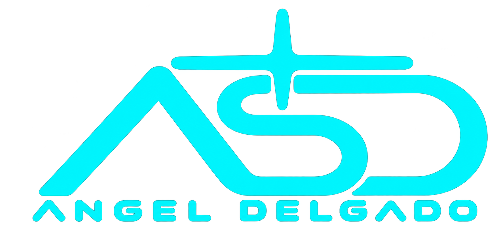

Languages
Languages used or encountered in coursework and projects.

Technologies I’ve explored through coursework and hands-on projects.
Languages used or encountered in coursework and projects.
Frameworks and libraries explored at different stages of my studies.
Web technologies and Android development covered in coursework or projects.
Foundational exposure through data analysis and introductory machine learning study.
Development tools I’ve used while learning and completing projects.
IN PRACTICE
Explore the projects where I’ve put some of these tools into practice.
See the projects ↗HAVE SOMETHING IN MIND?